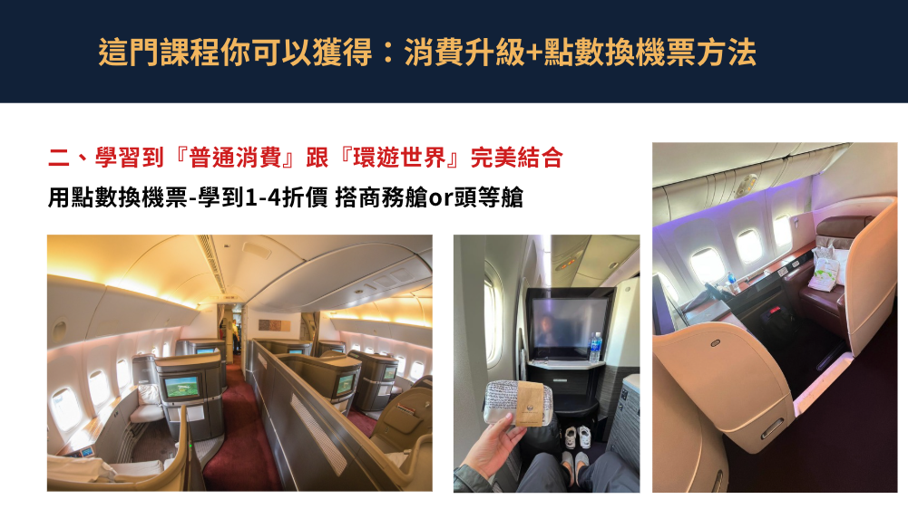
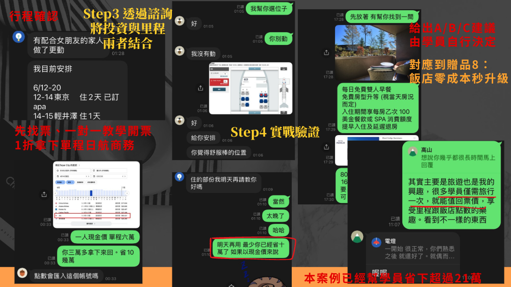
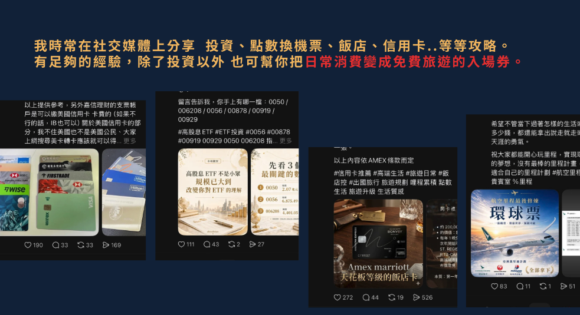
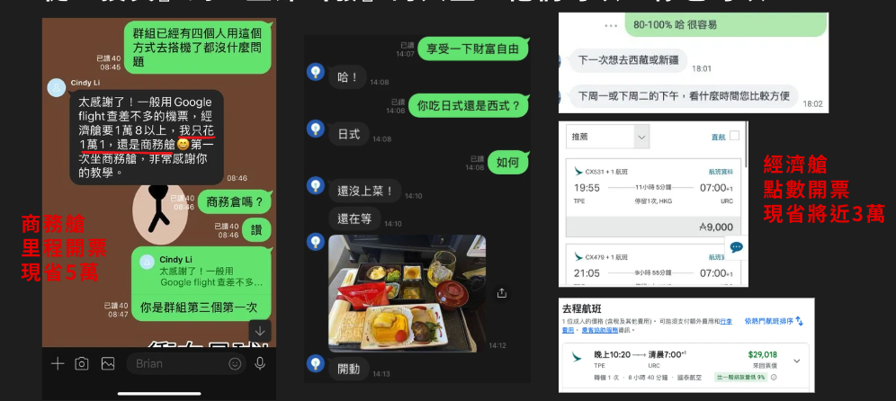

不是只找便宜票，而是看懂票背後的規則
真正會玩里程的人，看的是整套旅程結構：航空公司 Hub 怎麼串、聯盟怎麼互通、點數怎麼累積、里程怎麼兌換。
WHY IT MATTERS
多數人買機票，只停留在比價網站與搜尋結果。今天查到便宜票就覺得賺到，明天遇到轉機、多城市、外站、航班取消、里程兌換，又重新回到一片混亂。
真正會玩里程的人，看的是整套旅程結構：航空公司 Hub 怎麼串、聯盟怎麼互通、點數怎麼累積、里程怎麼兌換。
你學會的是判斷能力。什麼時候該用現金票、什麼時候該用里程票、什麼時候該換點數、什麼時候該改航點。
這門課把查票、累積、兌換、諮詢與開票流程整合起來，目標不是讓你多懂幾個名詞，而是讓你真的拿到成果。
直接查看方案 →VALUE LADDER
先知道航空公司怎麼設計轉運點，才知道外站票、多點進出與轉機怎麼規劃。
理解三大航空聯盟、會員計畫與機型配置，讓你不只會查一條路線，而是會找多種解法。
模糊日期、附近機場、一鍵搜尋、最少轉機、追蹤航段票價，讓你的查票效率真正提升。
從信用卡、住宿、消費、訂閱、吃飯與活動開始累積，讓你還沒上飛機就開始累積未來旅程。
不是只知道里程能換票，而是知道怎麼規劃、怎麼找位、怎麼避開常見浪費。
颱風、航班停飛、貴賓室、海外提款與臨時變動，不再只是靠運氣處理。
PROOF OF OUTCOME
我是 10 年里程玩家，本課程已銷售 5 年。過去學員購買課程後，透過諮詢協助，98% 均在 2 個月內開出第一張商務艙機票。
所以這不是一門「你自己慢慢看」的課，而是一套錄播課＋群組研討＋一年一對一諮詢的成果導向流程。目標很清楚：讓你把第一張商務艙機票開出來。
STUDENT OUTCOMES
下面這些案例，包含學員的實際開票成果、諮詢對話、點數換票與長期旅遊策略整合。你買到的不只是知識，而是一套真的能落地的里程旅行系統。
把日常消費、信用卡與點數累積整合起來，不用每次都用原價買票，也能把商務艙與頭等艙做成可以規劃的旅行選項。

不是丟給你一堆資訊自己研究，而是透過一對一諮詢把查票、行程、飯店與點數策略整合，陪你把成果真的做出來。

從投資、信用卡、飯店到點數換票，這門課不只教一種技巧，而是幫你建立一套可以長期優化、長期應用的旅遊升級系統。

不只高艙等才有價值，經濟艙點數開票也能省下可觀旅費。核心不是只開一張票，而是學會之後每次出國都能重複使用。

你不需要學一輩子才看到成果；只要成功開出一張商務艙機票，就有機會值回課程價格。
更重要的是，這套查票、累積、兌換的方法，未來每一次出國都能反覆使用。WHY BUY NOW
票價規則、轉機限制、航線調整、會員制度都在變。你越早學會底層邏輯，越能自己判斷，不被資訊焦慮牽著走。
真正關鍵不是刷很多錢，而是知道哪些消費、信用卡、住宿與活動能累積，並知道怎麼把點數用在高價值兌換。
當你理解里程兌換與開票邏輯，商務艙就不再只是偶爾犒賞自己的奢侈品，而是可以被規劃出來、被重複使用的旅行選項。
RETURN ON LEARNING
很多課程學完只是「知道更多」，但這門課的目標很直接：讓你把里程真的換成高價值機票。商務艙、頭等艙原價動輒數萬到十幾萬，只要你成功開出一次，就可能直接超過課程費用。這不是花錢買知識，而是買一套能幫你把旅費價值放大的能力。
而且這不是一次性的優惠碼。你學會的是一套可以反覆使用的方法：每次規劃旅行、每次信用卡消費、每次查航線與開票，都能繼續累積價值。
CURRICULUM
不教網路常見的 Trip、Skyscanner 與外站四段等基礎操作，重點在真正可複製的查票邏輯與進階實作。
此部分會在群組內研討，並約一個大家可以的時間來討論。
把「遙遠的退休計畫」變成「可立即規劃第二人生」：從信用卡策略、買點數、換機票到航點規劃，建立可以現在就開始執行的旅遊升級路線。
真正的旅行升級，不只發生在飛機上。這一章會把信用卡、飯店會籍、早餐、升等、延遲退房與海外支付一起整合，讓你的每一次出國體驗全面升級。
WHAT'S INCLUDED
FAQ
可以。課程會從外站、Hub、聯盟與航線基礎開始，逐步理解查票、里程累積、兌換與旅行應變。
課程已錄製完成，購買後可以直接開始學習；另外還有群組研討與一年一對一諮詢。
是，方案包含一年一對一諮詢與保證開票班，協助你在實際規劃與開票過程中少走彎路。
不以這些基礎內容為主。課程重點放在 Hub、聯盟、航線、進階查票與可延伸的規劃邏輯。
適合。即使你先從經濟艙與一般出國開始，這套機票與里程邏輯也會幫助你省下旅費、提高彈性，未來再逐步升級。
可以。課程裡面會教你購買點數的方法，不一定要靠辦信用卡累積里程；信用卡只是其中一種加速工具，不是唯一方式。
ENROLLMENT
你買到的不只是一套錄播課，而是完整的里程旅行訓練：查票邏輯、點數累積、商務艙兌換、航點策略、信用卡飯店升級、課後諮詢與實戰開票陪跑。
這堂課真正的價值，不在於你看完幾小時影片，而是只要成功開出一張商務艙機票，就有機會值回課程價格；而未來每一次出國，你都能繼續用這套方法判斷票價、路線、兌換、飯店權益與旅行風險。